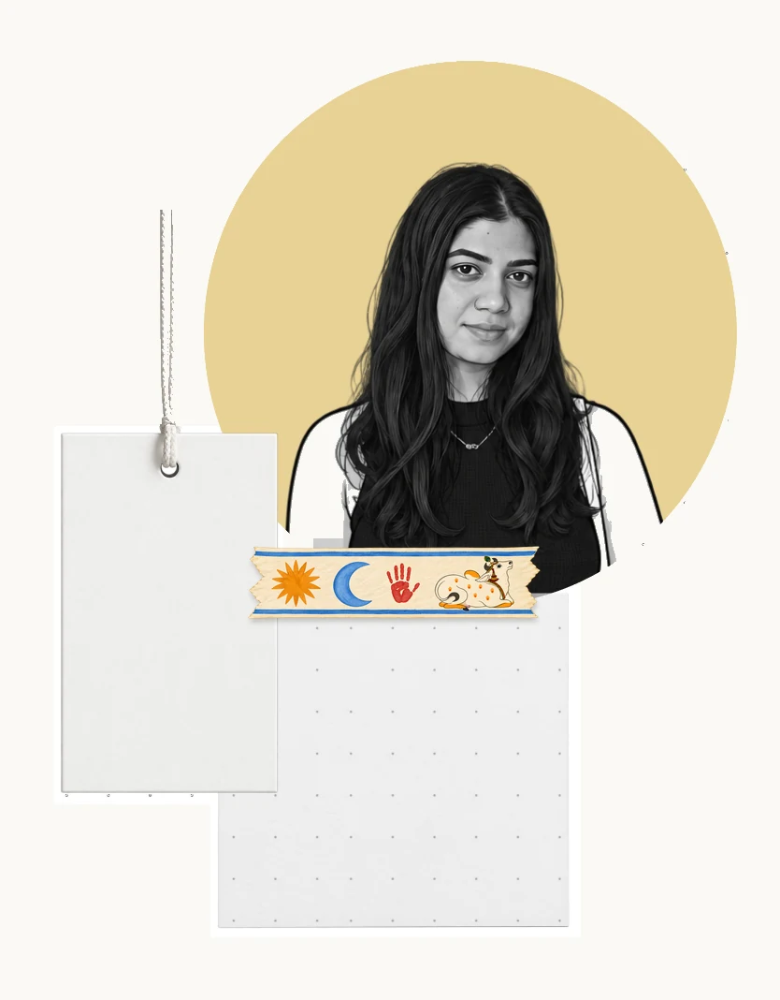
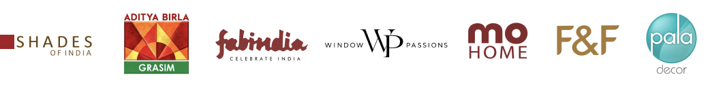
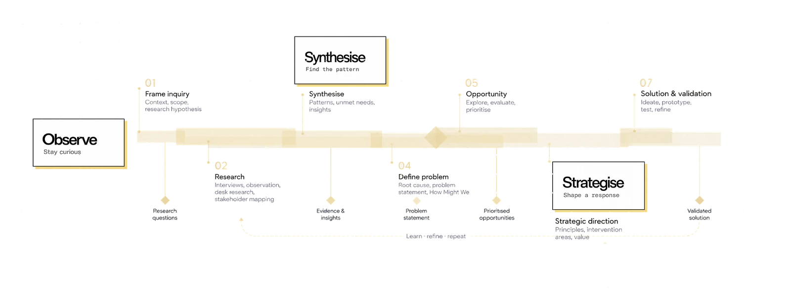

Interested in the invisible layers shaping everyday life.
Designer · Researcher · Observer
I’m Dharvi
Prajapati.
I'm a Strategic designer translating insights on peoplespaceservicesystemsbehaviourexperienceprocess into actionable, outcome driven design solutions

I observe.
I make sense.
I strategise.

Ideas in motion.
Curious about
what makes us
do what we do.
I’m interested in the invisible layers shaping everyday experiences — behaviour, rituals, relationships, environments and systems.
My approach begins with observation and listening. I use research to make sense of complexity, identify opportunities and explore how design can shift an experience for the better. I’m currently pursuing my master’s at the National Institute of Design, Gandhinagar.
Ethnography · Synthesis · Systems thinking · Prototyping · Spatial experiences